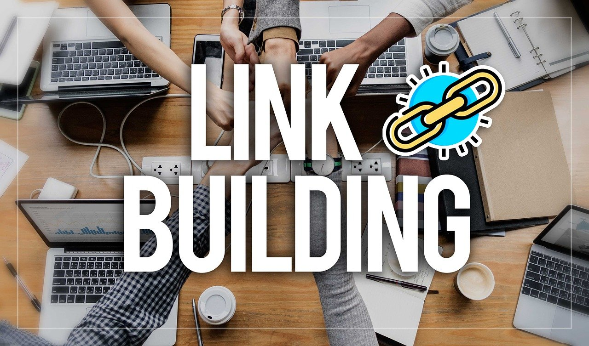

Servicio Linkbuilding

CONSTRUCCIÓN DE ENLACES LOCALES
¿Cuál es la definición de linkbuilding local?
El linkbuilding local es un componente importante de cualquier estrategia de SEO. Necesitará conexiones de alta calidad desde otros sitios web si quiere que su dominio (sitio web) se posicione bien en la búsqueda orgánica. Como expertos en linkbuilding local, tenemos páginas y portales que pueden referenciar su sitio web, y pensamos que los beneficios del linkbuilding van más allá del SEO.
En los directorios corporativos locales, hay enlaces externos.
Los blogs y portales web locales peruanos proporcionan enlaces.
Backlinks desde el ámbito local.
Estrategias para establecer vínculos locales
BENEFICIOS DEL LINKBUILDING AUTORIDAD DE DOMINIO Y DE PÁGINA
¿Cómo muestra Google la información relevante para una consulta? Las palabras clave utilizadas en su sitio web ayudan a los rastreadores web, conocidos como bots de Google, a organizar su material en categorías adecuadas cuando lo rastrean. Su sitio web debería aparecer en los resultados de búsqueda si utiliza los términos que el usuario ha escrito en el campo de búsqueda.
El número de enlaces relevantes que van a su sitio web puede ayudar a evaluar su autoridad. En consecuencia, cuanto mayor sea la autoridad de su dominio y mayores sean sus posibilidades de ser descubierto y clasificado en los resultados relevantes de Google, más conexiones externas de buena calidad tendrá su sitio web. La autoridad de página es un término que se refiere a la cantidad y calidad de las conexiones entrantes.
AUTORIDAD DE MARCA AUTORIDAD DE MARCA AUTOR
Las conexiones externas son un método excelente para posicionar su empresa como líder del sector. Para que su marca destaque entre las demás, es necesario mencionar y comprometerse con un contenido genuino y de alta calidad.
Los lectores están continuamente buscando nuevo material. Si proporcionas material de alta calidad, es casi seguro que serás reconocido como un experto en el tema. Esto ayuda al desarrollo de la autoridad de la marca.
Cada vez que compartes tu material en varias plataformas, lo expones a un nuevo público. El hecho de que tu material se publique en una revista de renombre te beneficia, ya que los lectores saben que el contenido es digno de confianza y les resulta útil.